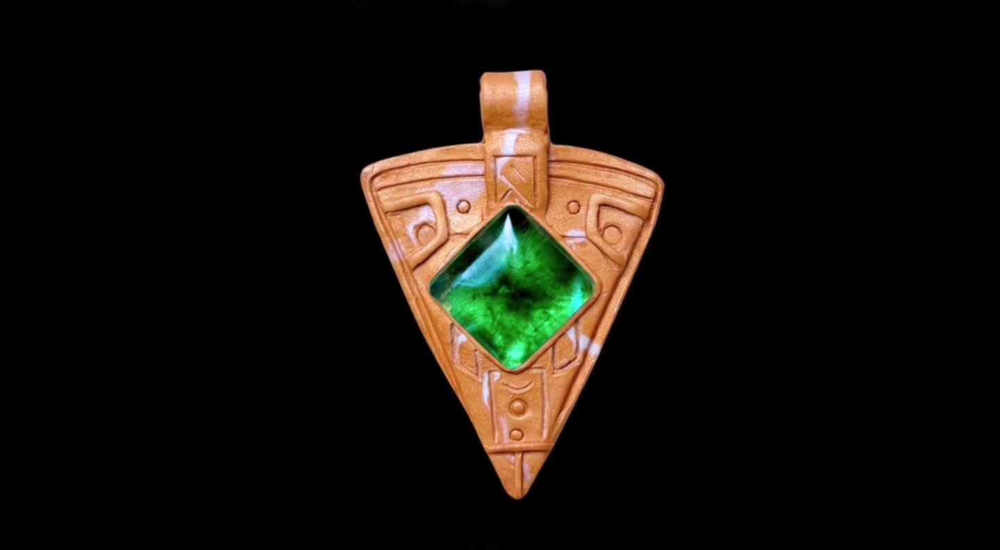
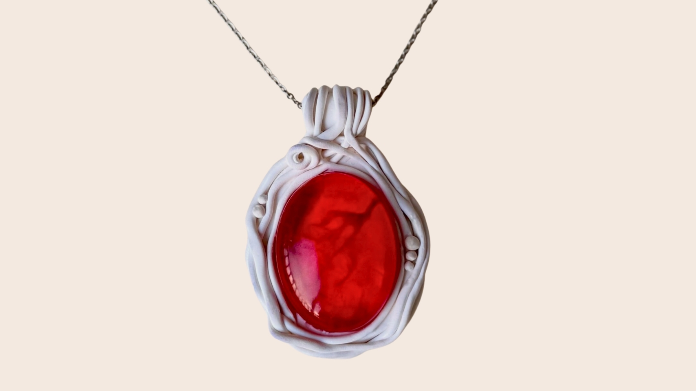
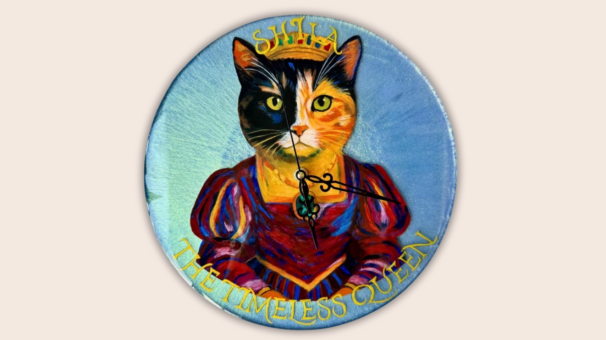
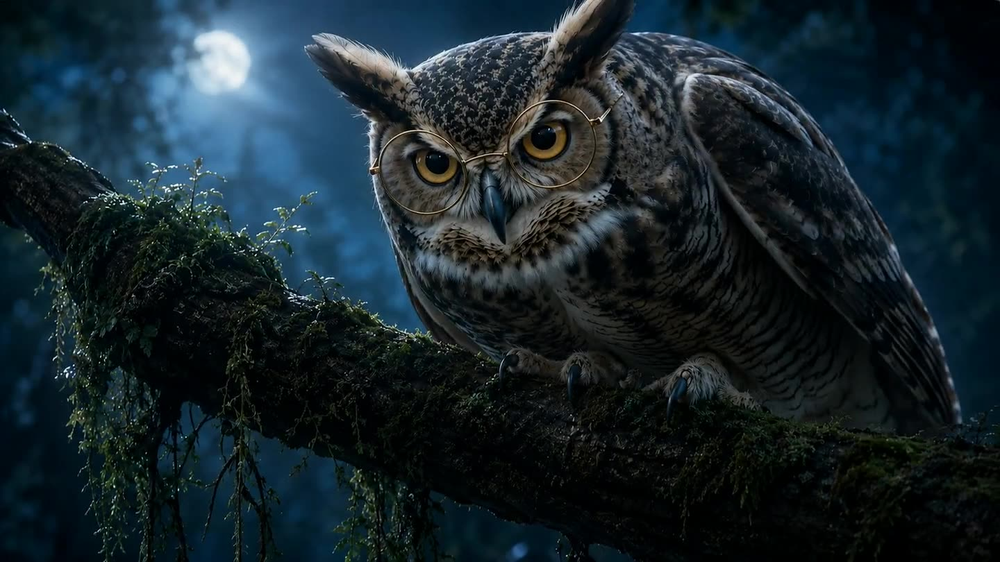

Yang Studio / 01
Objects with
a story.
Material experiments, wearable art and soulful objects. Crafted by hand, guided by spirit.

ZaruWearable artifact

OpheliaWearable art

ShilaHand-painted clock
Yang Theory / 02 — Original IP
Enter
Journey.
A story you color. Guided by sound. An original illustrated world where music, characters and film meet.

Yang Theory / 03 — Creative Production
Concept
to world.
Visual storytelling for physical and digital ideas. From an object to its cinematic identity, from an original story to an immersive web experience.
Discuss a project